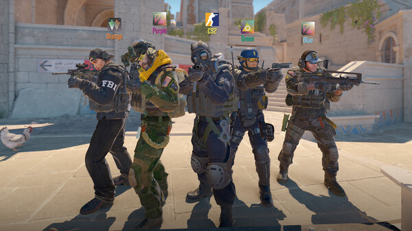
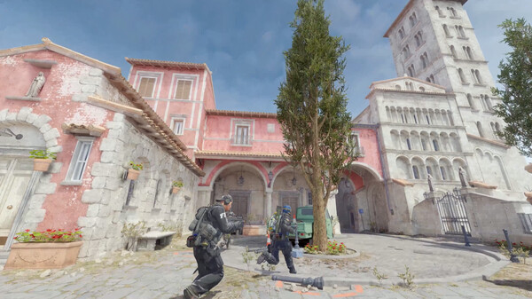
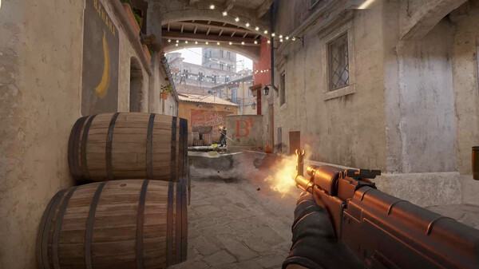
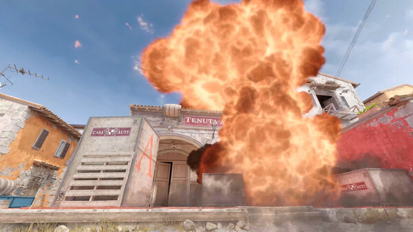

GAMING WORLD
GAMING WORLD




Counter-Strike 2 is a multiplayer tactical first-person shooter, in which two teams, the Terrorists and Counter-Terrorists, compete to complete various objectives. The game includes two round-based objective scenarios: bomb defusal and hostage rescue, with the bomb defusal scenario making up the primary gameplay experience. New gameplay features in Counter-Strike 2 include volumetric "smoke physics", a feature where the smoke generated by a smoke grenade grows to fill spaces, and can be altered in real time by gunshots or through the use of hand grenades. Additionally, the game features a revised weapon loadout system, which only allows players to bring five pistols, five "mid-tier" weapons (i.e submachine guns and shotguns), and five rifles with them into a match, for a total of fifteen weapons.
In standard bomb defusal matches, the Terrorist and Counter-Terrorist teams each have five players. In these game modes, eliminated players do not respawn until the next round. Within each round, the goal of the Terrorist team is to plant a bomb at one of two bombsites on the map and defend the bombsite until the bomb explodes. The Terrorist team can also win the round by eliminating the Counter-Terrorist team. The Counter-Terrorists attempt to stop them by running out the round clock, killing all Terrorists, or defusing the explosive. In a hostage rescue match, the Counter-Terrorist team act as the attackers, attempting to rescue non-player character "hostages" that the Terrorist team are defending. At the start of each round, players are able to purchase different weapons and equipment. A standard match ends when a team wins thirteen rounds.
Source: Wikipedia
OS
Windows 10
Processor
Intel Core i7-9700k or AMD Ryzen 7 2700X
Memory
16 GB RAM
Graphics
Nvidia RTX 2070 or AMD Radeon RX 5700 XT
DirectX
Version 11
Storage
60 GB available space

For over two decades, Counter-Strike has offered an elite competitive experience, one shaped by millions of players from across the globe. And now the next chapter in the CS story is about to begin. This is Counter-Strike 2.
Shooter
Action
Competitive
FPS
Multiplayer
PvP
Release Date
22 August 2012
Developers
Valve
Platforms
Microsoft Windows, Linux
Publisher
Valve